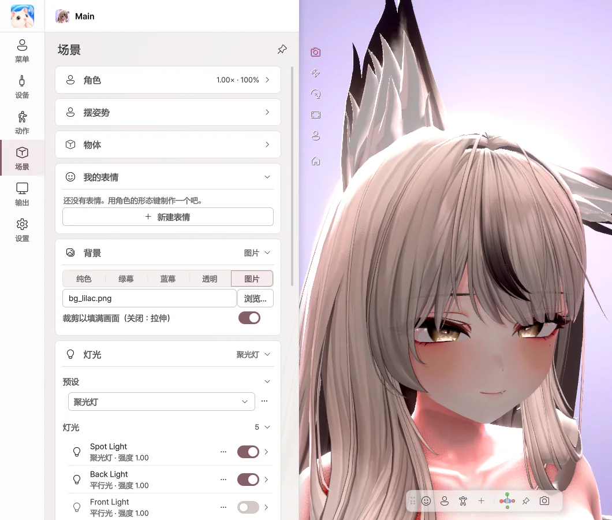
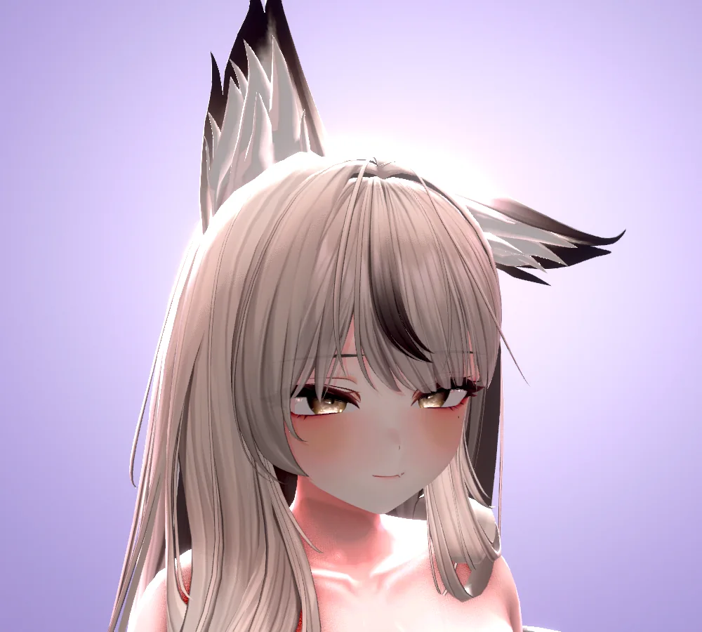
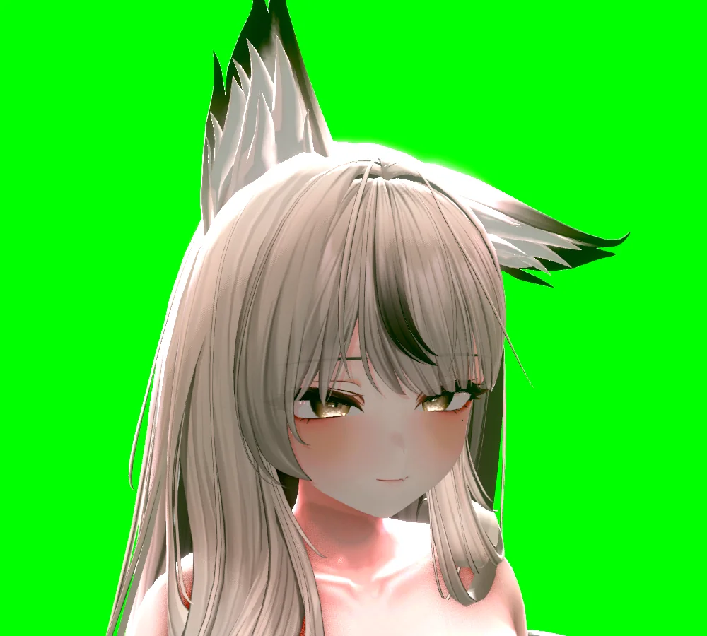
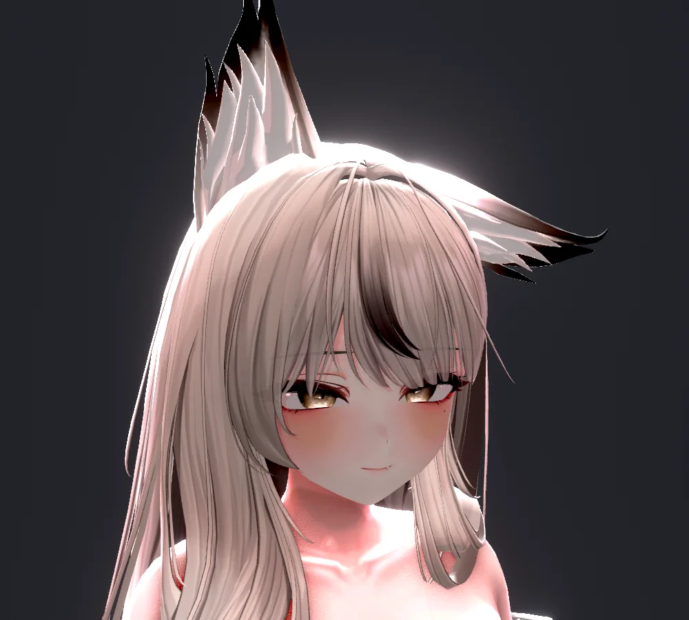
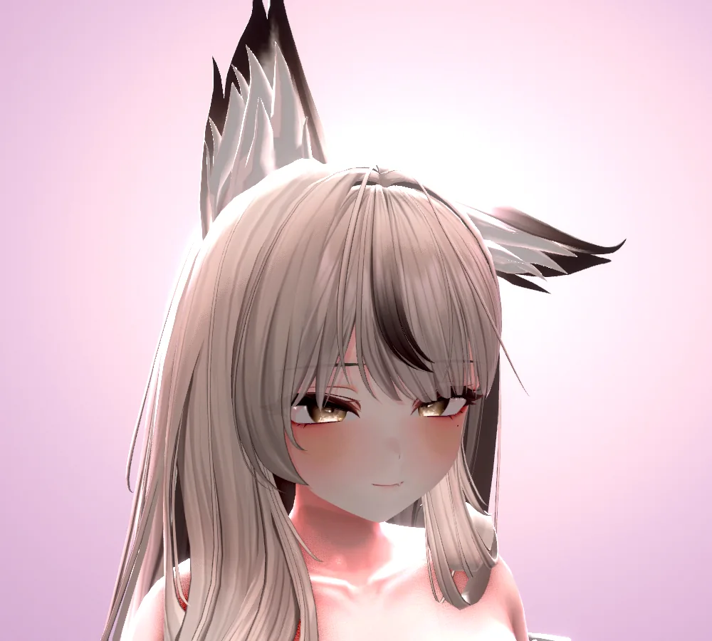
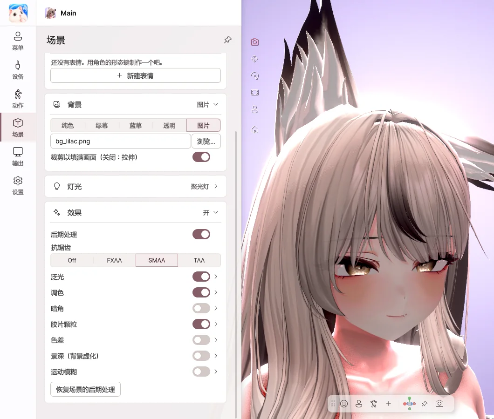

8. 场景
选择背景、灯光和效果。
灯光

- 在 预设 中选择氛围，灯光会一次性切换。
- 每盏灯都可以用开关开启或关闭，并更改亮度和颜色。
- 用 添加灯光 添加面部光、补光、轮廓光、平行光、点光源、聚光灯。
- 满意的灯光可以 保存为预设，修改后可以 将更改保存到预设。
灯光详细设置
| 项目 | 作用 |
|---|---|
| 颜色 | 通过色块、RGB、HEX 输入，或用 吸管 吸取画面中的颜色。开启 使用色温 后，可以在暖光 · 冷光之间选择。 |
| 位置、方向和目标 | 设定 俯仰 · 偏航 · 翻滚 角度、是否跟随角色移动，以及 朝向目标（如面部）。 |
| 阴影和范围 | 设定阴影及其强度、柔和边缘、光照 范围，以及聚光灯的 锥角。 |
在视图中选择灯光后会出现手柄。
- 拖动 方向手柄 改变灯光照射的位置，同时会显示向下和旋转的角度。
- 点光源 · 聚光灯可以用 X · Y · Z 箭头 逐个方向移动，光照范围会显示在视图中。
- 平行光用 X · Y · Z 旋转环 旋转。平行光与位置无关，只有方向会影响照明。
- 按住 Ctrl 拖动，会以 15° · 10 cm 为单位移动。


背景
| 选项 | 适用场景 |
|---|---|
| 纯色 | 任意颜色的背景 |
| 绿幕 · 蓝幕 | 在直播软件中用色度键抠除时 |
| 透明 | 通过 Spout2 不带背景发送时 |
| 图片 | 用图片作为背景时（可调整缩放及左右 · 上下位置） |




效果

- 泛光 — 明亮的部分会柔和地晕开。
- 调色 — 调整亮度、对比度、饱和度和色温。
- 景深 — 虚化背景，让角色更加突出。开启 自动对焦面部 后，焦点会跟随面部。
- 暗角 · 胶片颗粒 — 为画面边缘和质感增添氛围。
- 还可以开启 色差 · 运动模糊 · 抗锯齿 等，所有滑块都可以直接输入数值。
着色器
直接呈现角色所用的着色器。已在 Poiyomi、lilToon 等主要着色器上确认。不支持 AudioLink 和镜子检测。